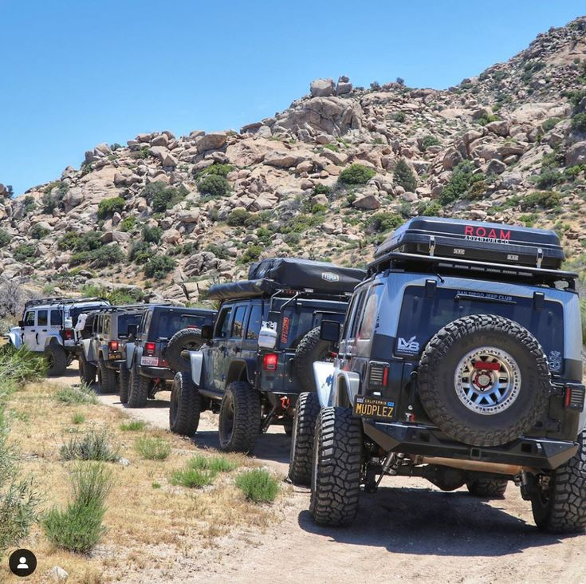
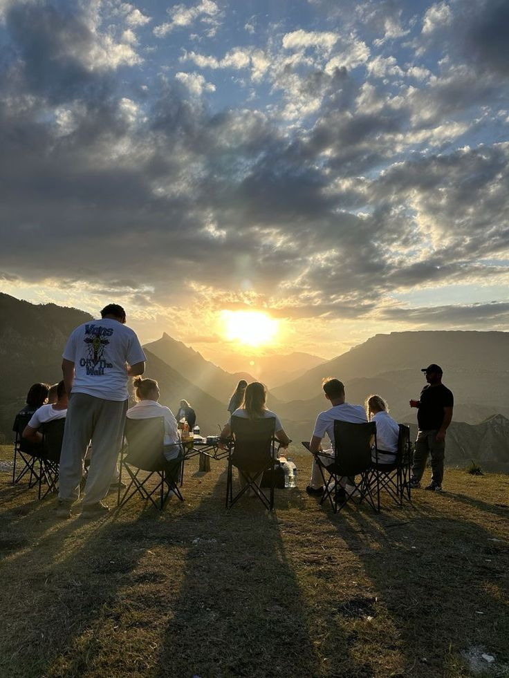
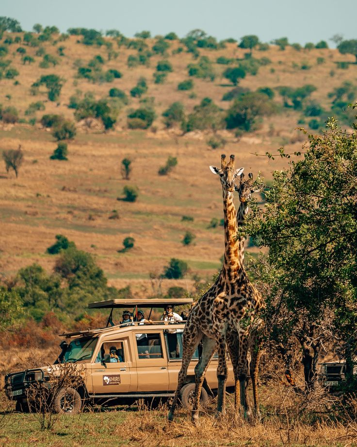

Nestled away from the usual tourist tracks, this park is a masterclass in preserved natural beauty. Walking its rugged, winding trails feels less like a curated tour and more like an authentic immersion into the wild, transitioning seamlessly from dense, old-growth canopy to sweeping, windswept ridge lines.. With its thriving native wildlife and remarkably pristine, uncrowded atmosphere, it is an absolute sanctuary for anyone looking to truly disconnect and experience nature at its most raw and majestic.
The defining highlight is undoubtedly its dramatic network of limestone gorges and hidden waterfalls, which offer stunning, panoramic viewpoints that reward every bit of the hike



f you are looking to escape the ordinary and reconnect with the wild, this park is an absolute must-visit. It offers a rare chance to step off the beaten path and immerse yourself in a pristine, uncrowded sanctuary where nature remains entirely uncontained. Whether you are chasing the thrill of hiking rugged ridge lines, discovering hidden waterfalls tucked inside dramatic limestone gorges, or simply hoping to catch a glimpse of native wildlife in their natural habitat, every moment here feels like a genuine adventure. Don't just read about it—pack your boots, leave the noise behind, and come experience this breathtaking sanctuary for yourself.
visit the park